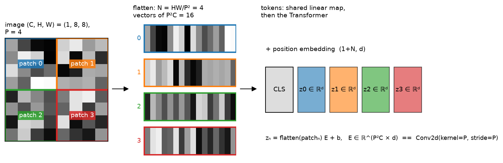
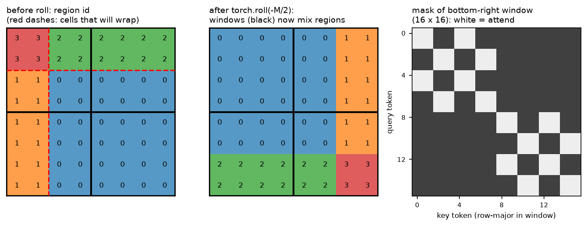

Vision Transformers¶
Why this matters at staff level. Every modern perception stack that talks to a language model starts by turning an image into tokens, and interviewers at autonomy companies and frontier labs use the ViT to test whether you can reason about sequence length, inductive bias and compute at the same time. Strong signal is writing patch embedding as a strided convolution, stating the \(O(N^2)\) attention cost as a function of resolution and patch size, explaining exactly why Swin needs a mask after the cyclic shift, and saying when you would still ship a ConvNet.
TL;DR: the interview card¶
- An image \(x \in \R^{C\times H\times W}\) becomes \(N = HW/P^2\) tokens. Each \(P\times P\times C\)
patch is flattened and mapped by one shared matrix \(E \in \R^{P^2C\times d}\), which is
exactly
Conv2d(C, d, kernel_size=P, stride=P). - Sequence: \([\text{CLS};\, z_1;\dots;z_N] + E_{pos} \in \R^{(N+1)\times d}\), then \(L\) pre-norm Transformer blocks, then a head on CLS or on the mean of the patch tokens.
- Per-layer cost in multiply-adds: \(12Nd^2 + 2N^2d\). Halving \(P\) quadruples \(N\) and multiplies the quadratic term by 16.
- ViTs carry less inductive bias than CNNs (no locality, no translation equivariance beyond the patch grid), so they are data-hungry. ViT beats ResNets only with JFT-scale pretraining, or with DeiT-style augmentation and distillation on ImageNet-1k.
- Resolution change: interpolate the learned \(\sqrt{N}\times\sqrt{N}\) position grid bicubically. FlexiViT resizes the patch kernel instead; NaViT keeps native resolution and packs variable-size images into one sequence.
- Swin: attention inside \(M\times M\) windows costs \(O(hw\,M^2 d)\) instead of \(O((hw)^2 d)\).
Alternate blocks shift the grid by \(M/2\) with
torch.roll, and a mask blocks attention between tokens that wrapped around and tokens that did not. Patch merging halves resolution and doubles width, giving a feature pyramid for detection. - Registers are extra learned tokens that soak up global information so background patches stop being used as scratch space. ViT-22B needs QK-normalisation and parallel blocks to train stably.
- ConvNeXt: a ResNet with ViT-era design choices matches Swin at equal FLOPs, so the gain came from the training recipe and macro design rather than from attention itself.
1. Intuition first¶
Take a \(1\times 8\times 8\) grayscale image and a patch size \(P = 4\). There are \(N = (8/4)^2 = 4\) patches. Each one is a \(4\times 4\) block flattened to a 16-vector. One linear map \(E \in \R^{16\times d}\), the same \(E\) for every patch, turns each into a \(d\)-dimensional token. Prepend a learned CLS token, add a position embedding, and you have a 5-token sequence a Transformer can read.

Look at the middle panel: the four flattened vectors are the rows of a \(4\times 16\) matrix, and the right panel is that matrix multiplied by \(E\). Nothing in the Transformer knows that patches 0 and 1 are neighbours. Only the position embedding can tell it.
Two things follow from this picture and drive the whole chapter.
First, the linear patch map is a convolution. A conv with kernel \(P\) and stride \(P\) visits the same non-overlapping blocks and applies the same weights, so the two are the same module with reshaped weights. The test in section 3 checks that to \(10^{-5}\).
Second, the sequence length is set by resolution and patch size, not by content. A ViT-B/16 at \(224^2\) sees \(N = 196\) tokens. At \(448^2\) it sees 784; with \(P = 8\) at \(448^2\) it sees 3136. Attention cost is quadratic in \(N\), so "use higher resolution" is a decision with a bill attached. Much of the engineering in this part (Swin windows, token compression in VLMs, factorised video attention) exists to pay that bill.
flowchart LR
A["image (B, C, H, W)"] --> B["patchify (B, N, P²C)"] --> C["linear E (B, N, d)"]
C --> D["[CLS] + pos (B, N+1, d)"] --> E["L × Transformer block"] --> F["LN, read CLS (B, d)"] --> G["head (B, K)"]2. The math¶
2.1 Patch embedding as a strided convolution¶
Write the image as \(x \in \R^{C\times H\times W}\) and index patches by \((i, j)\) with \(i < H/P\), \(j < W/P\). Patch \((i,j)\) is \(x[:, iP:(i+1)P, jP:(j+1)P] \in \R^{C\times P\times P}\), flattened in \((C, P, P)\) order into \(p_{ij} \in \R^{P^2C}\). The token is
A Conv2d(C, d, kernel_size=P, stride=P) with weight \(W \in \R^{d\times C\times P\times P}\)
computes output channel \(k\) at position \((i, j)\) as
\(\sum_{c,u,v} W[k,c,u,v]\, x[c, iP+u, jP+v] + b_k\), which is the dot product of \(p_{ij}\) with
row \(k\) of \(W\) reshaped to \((d, P^2C)\). So
The "no convolutions" in the ViT title is marketing. The first layer is a convolution whose receptive field never grows, and all spatial mixing after it is attention.
2.2 The encoder and the head¶
Stack the tokens row-wise, \(Z \in \R^{N\times d}\), prepend a learned \(z_{cls} \in \R^d\) and add a learned position matrix \(E_{pos} \in \R^{(N+1)\times d}\):
Each pre-norm block (see Transformer architectures) is
with multi-head self-attention per head \(h\) using three separate projections \(Q_h = XW^Q_h\), \(K_h = XW^K_h\), \(V_h = XW^V_h\) where \(W \in \R^{d\times d_{head}}\):
Why \(\sqrt{d_{head}}\), and the gradient of softmax attention, are derived in attention mathematics, so this chapter does not repeat them.
The classifier reads either the CLS row, \(\hat y = \text{LN}(X^{(L)})_0 W_{head}\), or the mean of the patch rows (global average pooling). The two have the same expressive power: CLS is a learned query that can attend to whatever it needs, GAP is a fixed uniform query. They differ in optimisation. CLS-pooled ViTs are a little more sensitive to learning rate. GAP-pooled ones, used in the ViT paper's ablations and in SigLIP-style encoders with an attention-pooling head, transfer more predictably to dense tasks because every patch token carries gradient directly.
2.3 Cost: where the FLOPs go¶
Count multiply-adds for one block with sequence length \(N\) (ignoring the CLS token) and width \(d\):
| Sub-layer | Multiply-adds | Scaling |
|---|---|---|
| \(Q, K, V, O\) projections | \(4Nd^2\) | linear in \(N\) |
| \(QK^\top\) and \(AV\) | \(2N^2 d\) | quadratic in \(N\) |
| MLP (ratio 4) | \(8Nd^2\) | linear in \(N\) |
For ViT-B/16 at \(224^2\): \(N = 196\), \(d = 768\), so \(12Nd^2 \approx 1.39\times10^9\) and \(2N^2 d \approx 0.06\times10^9\). The quadratic term is 4% of the total and the model is dominated by the linear layers. That changes fast with resolution. At \(1024^2\) with \(P = 16\), \(N = 4096\) and \(2N^2 d \approx 25.8\times10^9\) against \(12Nd^2 \approx 29\times10^9\). Above roughly \(N \approx 6d\), attention overtakes the MLP. The patch size is a knob that trades spatial detail for a quartic change in attention cost, since \(N^2 \propto 1/P^4\), which is why detection and OCR backbones at high resolution use windows (Swin, ViTDet) or hierarchical pooling (PVT).
2.4 Position embeddings and changing resolution¶
The ViT uses a learned \(E_{pos} \in \R^{(N+1)\times d}\). It has no built-in notion of 2-D structure, but plotting the cosine similarity between rows of a trained model recovers a grid. A fixed 2-D sinusoidal alternative concatenates a 1-D sinusoid of the row index (first \(d/2\) dims) with one of the column index (last \(d/2\)):
To fine-tune at a new resolution, treat the learned \(\sqrt N\times\sqrt N\times d\) grid as a \(d\)-channel image and resample it bicubically to \(\sqrt{N'}\times\sqrt{N'}\). The patch embedding is unchanged. This works because neighbouring position vectors are similar, so interpolation produces plausible embeddings for positions the model never saw. It stops working across large ratios: 2x is routine, 8x degrades. That limitation motivates FlexiViT (train with random patch sizes and resize the kernel \(E\) with a pseudo-inverse so the token stays comparable) and NaViT (keep native resolution and aspect ratio, use factorised row/column position embeddings, and pack several images' tokens into one fixed-length sequence with an attention mask that blocks cross-image attention, the same packing trick used for LLM pretraining in Part VI).
2.5 Inductive bias, data hunger, and DeiT¶
A convolution encodes two priors: locality, since a unit sees only its neighbourhood, and translation equivariance, since the same filter runs everywhere. A ViT encodes neither beyond the patch boundary. Every token can attend to every other from layer 1, and the position embedding is free. With enough data the model learns locality (early heads in trained ViTs have small attention distances, later heads global) and the freedom pays off. With little data it overfits: in the ViT paper, ImageNet-1k-only training lands below a comparable ResNet, and the ordering flips once pretraining reaches tens of millions of images (ImageNet-21k) and beyond (JFT-300M).
DeiT showed that data can be replaced by regularisation and a teacher. Its recipe is heavy augmentation (RandAugment, Mixup, CutMix, random erasing, repeated augmentation), stochastic depth, and a distillation token: a second learned token whose output is trained with cross-entropy against the hard label of a ConvNet teacher,
The teacher's inductive bias transfers through its predictions: the ConvNet's locality prior becomes a target the ViT must reproduce. At inference the two logit vectors are averaged. "ViTs need more data" is better stated as "ViTs need more constraint", and constraint can come from data, augmentation or a teacher.
2.6 Swin: windows, shifted windows and the mask¶
Let the tokens sit on an \(h\times w\) grid with \(h = H/P\). Global attention costs \(2(hw)^2 d\) in the quadratic term. Windowed attention partitions the grid into non-overlapping \(M\times M\) windows and runs full attention inside each:
The quadratic term became linear in \(hw\), with constant \(M^2 = 49\) for \(M = 7\). The cost is that tokens in different windows never communicate.
Shifted windows fix that in the next block: shift the window grid by
\((\lfloor M/2\rfloor, \lfloor M/2\rfloor)\) so every new window straddles four old ones.
Implementing the shift naively creates \((h/M+1)(w/M+1)\) windows of unequal size. Swin's
trick is a cyclic shift: torch.roll(x, (-M/2, -M/2), dims=(1, 2)) moves the top \(M/2\) rows
to the bottom and the left \(M/2\) columns to the right, after which the ordinary
\(M\)-aligned partition gives the shifted windows. The catch is that windows on the bottom and
right edges now contain tokens that wrapped around from the opposite side of the image and
are not spatial neighbours of the tokens they sit beside.
The mask repairs that. Label every cell of the un-shifted grid with \(r = 2\cdot[\text{row} < M/2] + [\text{col} < M/2]\), four regions recording whether the row wrapped and whether the column wrapped. Roll the label grid exactly as the tokens were rolled, partition it into windows, and set
added to the logits before the softmax. Within a window, tokens attend only to tokens from the same region. A value of \(-100\) is enough to zero the softmax weight in float32. After attention, roll back by \((+M/2, +M/2)\).

Look at the middle panel: the top-left window is entirely region 0 with no wrapped cells, so its mask is all zeros. The bottom-right window mixes four regions, and its mask on the right is the block pattern of same-region pairs. The test in section 3 checks the mask against a brute-force definition: two tokens may attend if and only if their original coordinates differ by less than \(M\) on both axes.
The official implementation labels nine regions with the slices \([0, h-M)\), \([h-M, h-M/2)\), \([h-M/2, h)\) in rolled coordinates. That is equivalent inside every window, because the extra boundary at \(h - M\) falls on a window edge. The two-region-per-axis version above is the minimal statement of what the mask has to do.
Relative position bias. Swin replaces absolute position embeddings with a learned table \(\hat B \in \R^{(2M-1)^2\times H}\) indexed by the offset \((\Delta i, \Delta j)\) between query and key inside the window:
Because the bias depends on relative offset, one table serves every window and every image size. It is translation equivariance re-introduced by hand.
Patch merging. Between stages, concatenate each \(2\times 2\) group of neighbouring tokens into \(4d\) channels, LayerNorm, and project \(4d \to 2d\). Resolution halves, width doubles, and the four stages emit features at strides 4, 8, 16 and 32. A detector or segmenter consumes that pyramid through FPN exactly as it would a ResNet's, as in object detection.
2.7 PVT and the ConvNeXt counterpoint¶
PVT keeps global attention but shrinks the keys and values. Spatial-reduction attention reshapes \(K, V\) from \(hw\times d\) to \((hw/R^2)\times d\) with a strided conv, so the quadratic term becomes \(2(hw)(hw/R^2)d\). Queries stay at full resolution, and the pyramid comes from patch-embedding with stride at each stage. It is the simpler design when you want global context and can afford the \(R^2\) information loss on the key side.
ConvNeXt asks the opposite question: how much of Swin's accuracy is attention, and how much is the modern recipe? Starting from a ResNet-50 and adopting, one at a time, a \(4\times4\) stride-4 patchify stem, stage ratio 1:1:3:1, depthwise \(7\times7\) convolutions, the inverted bottleneck, LayerNorm for BatchNorm, GELU for ReLU, fewer activations and norms, and the DeiT/Swin training recipe (AdamW, 300 epochs, Mixup/CutMix, stochastic depth), it matches Swin at each FLOP budget on ImageNet and on COCO and ADE20K. The decision between a ViT and a ConvNet is therefore about deployment (hardware kernels, resolution schedule, multimodal integration) rather than accuracy at fixed compute. A ConvNet is still the right answer for a fixed-resolution edge camera with INT8 conv accelerators. A ViT is the right answer when the features have to feed a Transformer decoder or a language model.
2.8 Scaling and registers¶
Two phenomena appear only at scale and are worth naming.
Training instability (ViT-22B). Attention logits \(QK^\top/\sqrt{d_{head}}\) grow during training in very wide models, saturating the softmax and producing near-zero gradients. The fix is LayerNorm on \(Q\) and \(K\) before the dot product (QK-normalisation), plus running the attention and MLP sub-layers in parallel from the same input to improve throughput at 22B parameters.
Artifact tokens (registers). In large self-supervised ViTs at DINOv2 scale, a few
background patch tokens acquire very high norms and act as scratch space for global
computation, corrupting attention maps and dense features. Adding a handful of learned
register tokens to the sequence, discarded at the output, gives the model somewhere else to
put that computation. The artifacts disappear and dense-task transfer improves. TinyViT
in section 3 takes n_registers for this reason.
3. Implementation¶
All code is in src/mlbook/multimodal/. The attention block is written with three separate
linears so you can retype it, and the tests compare it to nn.MultiheadAttention.
3.1 Patchify and the two patch embeddings¶
def patchify(x: torch.Tensor, patch: int) -> torch.Tensor:
B, C, H, W = x.shape
h, w = H // patch, W // patch
x = x.view(B, C, h, patch, w, patch) # (B, C, h, P, w, P)
x = x.permute(0, 2, 4, 1, 3, 5) # (B, h, w, C, P, P)
return x.reshape(B, h * w, C * patch * patch) # (B, N, P*P*C)
class PatchEmbedLinear(nn.Module):
def __init__(self, in_channels: int, patch: int, d: int) -> None:
super().__init__()
self.patch = patch
self.proj = nn.Linear(in_channels * patch * patch, d)
def forward(self, x: torch.Tensor) -> torch.Tensor:
tokens = patchify(x, self.patch) # (B, N, P*P*C)
return self.proj(tokens) # (B, N, d)
class PatchEmbedConv(nn.Module):
def __init__(self, in_channels: int, patch: int, d: int) -> None:
super().__init__()
self.proj = nn.Conv2d(in_channels, d, kernel_size=patch, stride=patch)
def forward(self, x: torch.Tensor) -> torch.Tensor:
z = self.proj(x) # (B, d, H/P, W/P)
return z.flatten(2).transpose(1, 2) # (B, N, d)
The view in patchify splits \(H\) into \((h, P)\) and \(W\) into \((w, P)\). The permute brings
the two patch-index axes to the front and the \((C, P, P)\) content axes to the back, in the
same order as a conv weight, so PatchEmbedConv.load_from_linear is a pure reshape of the
weight. That reshape is the boxed identity of section 2.1 written in code.
3.2 Multi-head self-attention, explicitly¶
class MultiHeadSelfAttention(nn.Module):
def __init__(self, d: int, n_heads: int) -> None:
super().__init__()
self.d, self.n_heads, self.d_head = d, n_heads, d // n_heads
self.w_q = nn.Linear(d, d)
self.w_k = nn.Linear(d, d)
self.w_v = nn.Linear(d, d)
self.w_o = nn.Linear(d, d)
def split_heads(self, t: torch.Tensor) -> torch.Tensor:
B, N, _ = t.shape
t = t.view(B, N, self.n_heads, self.d_head) # (B, N, H, d_head)
return t.transpose(1, 2) # (B, H, N, d_head)
def forward(self, x: torch.Tensor, mask: torch.Tensor | None = None) -> torch.Tensor:
B, N, _ = x.shape
q = self.split_heads(self.w_q(x)) # (B, H, N, d_head)
k = self.split_heads(self.w_k(x)) # (B, H, N, d_head)
v = self.split_heads(self.w_v(x)) # (B, H, N, d_head)
scores = q @ k.transpose(-2, -1) / math.sqrt(self.d_head) # (B, H, N, N)
if mask is not None:
scores = scores + mask # (B, H, N, N), broadcast
attn = torch.softmax(scores, dim=-1) # (B, H, N, N)
out = attn @ v # (B, H, N, d_head)
out = out.transpose(1, 2).reshape(B, N, self.d) # (B, N, d)
return self.w_o(out) # (B, N, d)
The mask is additive and broadcastable to (B, H, N, N). The same module serves the causal
LM in chapter 4, where the mask is a (1, 1, T, T)
upper-triangular \(-10^9\), and the padded text encoder in
chapter 3, where it is a (B, 1, 1, T) key mask.
3.3 The ViT¶
class TinyViT(nn.Module):
def __init__(self, image_size, patch, in_channels, d, depth, n_heads, n_classes,
pool="cls", n_registers=0, mlp_ratio=4) -> None:
super().__init__()
self.pool, self.n_registers = pool, n_registers
n_patches = (image_size // patch) ** 2
self.patch_embed = PatchEmbedLinear(in_channels, patch, d)
self.cls_token = nn.Parameter(torch.zeros(1, 1, d)) # (1, 1, d)
self.registers = nn.Parameter(torch.zeros(1, n_registers, d)) # (1, R, d)
self.pos_embed = nn.Parameter(torch.zeros(1, 1 + n_registers + n_patches, d)) # (1, 1+R+N, d)
self.blocks = nn.ModuleList([TransformerBlock(d, n_heads, mlp_ratio) for _ in range(depth)])
self.norm = nn.LayerNorm(d)
self.head = nn.Linear(d, n_classes)
def tokens(self, x: torch.Tensor) -> torch.Tensor:
B = x.shape[0]
t = self.patch_embed(x) # (B, N, d)
cls = self.cls_token.expand(B, -1, -1) # (B, 1, d)
reg = self.registers.expand(B, -1, -1) # (B, R, d)
t = torch.cat([cls, reg, t], dim=1) # (B, 1+R+N, d)
t = t + self.pos_embed # (B, 1+R+N, d)
for block in self.blocks:
t = block(t) # (B, 1+R+N, d)
return self.norm(t) # (B, 1+R+N, d)
def forward(self, x: torch.Tensor) -> torch.Tensor:
t = self.tokens(x) # (B, 1+R+N, d)
if self.pool == "cls":
feat = t[:, 0] # (B, d)
else:
feat = t[:, 1 + self.n_registers:].mean(dim=1) # (B, d)
return self.head(feat) # (B, K)
tokens() is separate from forward() because every later chapter wants the token grid
rather than the logits: CLIP pools it, a VLM projects it, a detector reshapes it back to
\(h\times w\). DistillableViT in the same file adds the DeiT distillation token and a second
head.
3.4 Windowed and shifted-window attention¶
def shifted_window_mask(h: int, w: int, M: int, shift: int) -> torch.Tensor:
if shift == 0:
return torch.zeros((h // M) * (w // M), M * M, M * M) # (nW, M*M, M*M)
ids = region_ids(h, w, shift) # (h, w) 2*row_wrapped + col_wrapped
ids = torch.roll(ids, shifts=(-shift, -shift), dims=(0, 1)) # (h, w) same roll as the tokens
win = window_partition(ids[None, :, :, None].float(), M).squeeze(-1) # (nW, M*M)
diff = win[:, :, None] - win[:, None, :] # (nW, M*M, M*M)
return torch.where(diff == 0, 0.0, -100.0) # (nW, M*M, M*M)
class SwinBlock(nn.Module):
def forward(self, x: torch.Tensor) -> torch.Tensor:
B, h, w, d = x.shape
y = self.ln1(x) # (B, h, w, d)
if self.shift > 0:
y = torch.roll(y, shifts=(-self.shift, -self.shift), dims=(1, 2)) # (B, h, w, d)
mask = shifted_window_mask(h, w, self.M, self.shift) # (nW, M*M, M*M)
else:
mask = None
y = window_partition(y, self.M) # (B*nW, M*M, d)
y = self.attn(y, mask) # (B*nW, M*M, d)
y = window_reverse(y, self.M, h, w) # (B, h, w, d)
if self.shift > 0:
y = torch.roll(y, shifts=(self.shift, self.shift), dims=(1, 2)) # (B, h, w, d)
x = x + y # (B, h, w, d)
x = x + self.fc2(F.gelu(self.fc1(self.ln2(x)))) # (B, h, w, d)
return x
WindowAttention in the same file is the explicit MHSA of section 3.2 with two additions:
the relative-position bias gathered from a \((2M-1)^2\times H\) table by a precomputed index,
and a mask broadcast over the batch by viewing (B*nW, H, L, L) as (B, nW, H, L, L).
PatchMerging slices the four \(2\times2\) sub-grids with strides (x[:, 0::2, 0::2] and so
on) and concatenates them before the \(4d \to 2d\) linear.
Full implementation: src/mlbook/multimodal/patch_embed.py
"""Patchification for vision Transformers.
An image ``(B, C, H, W)`` is cut into ``N = (H/P) * (W/P)`` non-overlapping
``P x P`` patches; each patch is flattened to a ``P*P*C`` vector and mapped to
``R^d`` by ONE shared linear map ``E in R^{(P*P*C) x d}``. That linear map is
exactly a convolution with ``kernel_size = stride = P`` — both are implemented
here and tested equal. Also: learned and 2-D sinusoidal position embeddings and
bicubic interpolation of a position grid when the input resolution changes.
"""
from __future__ import annotations
import math
import torch
from torch import nn
def patchify(x: torch.Tensor, patch: int) -> torch.Tensor:
"""(B, C, H, W) -> (B, N, P*P*C) with N = (H/P)*(W/P), row-major patch order.
Patch (i, j) covers rows ``i*P:(i+1)*P`` and cols ``j*P:(j+1)*P``; its
vector is laid out as (C, P, P) flattened, matching ``nn.Conv2d`` weight order.
"""
B, C, H, W = x.shape
if H % patch or W % patch:
raise ValueError("H and W must be multiples of the patch size")
h, w = H // patch, W // patch
x = x.view(B, C, h, patch, w, patch) # (B, C, h, P, w, P)
x = x.permute(0, 2, 4, 1, 3, 5) # (B, h, w, C, P, P)
return x.reshape(B, h * w, C * patch * patch) # (B, N, P*P*C)
def unpatchify(tokens: torch.Tensor, patch: int, channels: int, H: int, W: int) -> torch.Tensor:
"""Inverse of ``patchify``: (B, N, P*P*C) -> (B, C, H, W)."""
B = tokens.shape[0]
h, w = H // patch, W // patch
x = tokens.view(B, h, w, channels, patch, patch) # (B, h, w, C, P, P)
x = x.permute(0, 3, 1, 4, 2, 5) # (B, C, h, P, w, P)
return x.reshape(B, channels, H, W) # (B, C, H, W)
class PatchEmbedLinear(nn.Module):
"""Patchify + shared linear map: (B, C, H, W) -> (B, N, d). ``z_n = flatten(patch_n) E + b``."""
def __init__(self, in_channels: int, patch: int, d: int) -> None:
super().__init__()
self.patch = patch
self.proj = nn.Linear(in_channels * patch * patch, d)
def forward(self, x: torch.Tensor) -> torch.Tensor:
tokens = patchify(x, self.patch) # (B, N, P*P*C)
return self.proj(tokens) # (B, N, d)
class PatchEmbedConv(nn.Module):
"""The same map as a conv with kernel = stride = P: (B, C, H, W) -> (B, N, d)."""
def __init__(self, in_channels: int, patch: int, d: int) -> None:
super().__init__()
self.proj = nn.Conv2d(in_channels, d, kernel_size=patch, stride=patch)
def forward(self, x: torch.Tensor) -> torch.Tensor:
z = self.proj(x) # (B, d, H/P, W/P)
return z.flatten(2).transpose(1, 2) # (B, N, d)
@torch.no_grad()
def load_from_linear(self, lin: PatchEmbedLinear) -> None:
"""Copy weights from the linear version: W_lin is (d, P*P*C) -> conv weight (d, C, P, P)."""
d, _ = lin.proj.weight.shape
self.proj.weight.copy_(lin.proj.weight.view(self.proj.weight.shape)) # (d, C, P, P)
self.proj.bias.copy_(lin.proj.bias) # (d,)
def sinusoidal_2d_pos_embed(h: int, w: int, d: int) -> torch.Tensor:
"""Fixed 2-D sin/cos position embedding, (h*w, d): first d/2 dims encode the row, last d/2 the column.
Each half uses the 1-D Transformer recipe with frequencies ``1 / 10000^{2i/(d/2)}``.
"""
if d % 4 != 0:
raise ValueError("d must be divisible by 4")
half = d // 2
def one_axis(n: int) -> torch.Tensor:
pos = torch.arange(n, dtype=torch.float32)[:, None] # (n, 1)
i = torch.arange(half // 2, dtype=torch.float32)[None, :] # (1, half/2)
angle = pos / (10000 ** (2 * i / half)) # (n, half/2)
return torch.cat([angle.sin(), angle.cos()], dim=1) # (n, half)
rows = one_axis(h)[:, None, :].expand(h, w, half) # (h, w, half)
cols = one_axis(w)[None, :, :].expand(h, w, half) # (h, w, half)
return torch.cat([rows, cols], dim=-1).reshape(h * w, d) # (h*w, d)
def interpolate_pos_embed(pos: torch.Tensor, old_hw: tuple[int, int], new_hw: tuple[int, int]) -> torch.Tensor:
"""Resize a learned position grid: (h0*w0, d) -> (h1*w1, d) by bicubic interpolation.
This is how a ViT pretrained at 224 px is fine-tuned at 384 px: the *grid* of
embeddings is treated as a d-channel image and resampled.
"""
h0, w0 = old_hw
h1, w1 = new_hw
d = pos.shape[1]
grid = pos.view(1, h0, w0, d).permute(0, 3, 1, 2) # (1, d, h0, w0)
grid = nn.functional.interpolate(grid, size=(h1, w1), mode="bicubic", align_corners=False) # (1, d, h1, w1)
return grid.permute(0, 2, 3, 1).reshape(h1 * w1, d) # (h1*w1, d)
def num_patches(H: int, W: int, patch: int) -> int:
"""N = (H/P)(W/P): the sequence length a ViT sees, so attention cost is O(N^2) = O((HW)^2 / P^4)."""
return math.ceil(H / patch) * math.ceil(W / patch)
Full implementation: src/mlbook/multimodal/vit.py
"""A tiny Vision Transformer from scratch.
tokens = PatchEmbed(image) # (B, N, d), N = HW / P^2
x = [CLS; tokens] + pos # (B, N+1, d)
x = Block_L(... Block_1(x)) # (B, N+1, d)
logits = Head(LN(x)[:, 0]) # (B, K) (or mean over tokens with pool="gap")
Optionally adds *register* tokens (extra learned tokens that carry global
information and are discarded at the output) and a DeiT-style distillation token.
"""
from __future__ import annotations
import torch
from torch import nn
from .attention_block import TransformerBlock
from .patch_embed import PatchEmbedLinear
class TinyViT(nn.Module):
"""Vision Transformer classifier: (B, C, H, W) -> (B, K).
``pool="cls"`` reads the CLS token; ``pool="gap"`` averages the patch tokens.
``n_registers`` extra tokens are prepended after CLS and dropped at the end.
"""
def __init__(
self,
image_size: int,
patch: int,
in_channels: int,
d: int,
depth: int,
n_heads: int,
n_classes: int,
pool: str = "cls",
n_registers: int = 0,
mlp_ratio: int = 4,
) -> None:
super().__init__()
if pool not in ("cls", "gap"):
raise ValueError("pool must be 'cls' or 'gap'")
self.pool = pool
self.n_registers = n_registers
self.grid = image_size // patch
n_patches = self.grid * self.grid
self.patch_embed = PatchEmbedLinear(in_channels, patch, d)
self.cls_token = nn.Parameter(torch.zeros(1, 1, d)) # (1, 1, d)
self.registers = nn.Parameter(torch.zeros(1, n_registers, d)) # (1, R, d)
self.pos_embed = nn.Parameter(torch.zeros(1, 1 + n_registers + n_patches, d)) # (1, 1+R+N, d)
nn.init.trunc_normal_(self.pos_embed, std=0.02)
nn.init.trunc_normal_(self.cls_token, std=0.02)
self.blocks = nn.ModuleList([TransformerBlock(d, n_heads, mlp_ratio) for _ in range(depth)])
self.norm = nn.LayerNorm(d)
self.head = nn.Linear(d, n_classes)
def tokens(self, x: torch.Tensor) -> torch.Tensor:
"""Run the encoder: (B, C, H, W) -> (B, 1+R+N, d) normalised tokens."""
B = x.shape[0]
t = self.patch_embed(x) # (B, N, d)
cls = self.cls_token.expand(B, -1, -1) # (B, 1, d)
reg = self.registers.expand(B, -1, -1) # (B, R, d)
t = torch.cat([cls, reg, t], dim=1) # (B, 1+R+N, d)
t = t + self.pos_embed # (B, 1+R+N, d)
for block in self.blocks:
t = block(t) # (B, 1+R+N, d)
return self.norm(t) # (B, 1+R+N, d)
def forward(self, x: torch.Tensor) -> torch.Tensor:
t = self.tokens(x) # (B, 1+R+N, d)
if self.pool == "cls":
feat = t[:, 0] # (B, d)
else:
feat = t[:, 1 + self.n_registers :].mean(dim=1) # (B, d)
return self.head(feat) # (B, K)
class DistillableViT(TinyViT):
"""DeiT-style ViT with a distillation token: returns (cls_logits, dist_logits), each (B, K).
Train with ``CE(cls_logits, y) + CE(dist_logits, teacher_argmax)`` (hard distillation);
at test time average the two logit vectors.
"""
def __init__(self, *args, **kwargs) -> None:
super().__init__(*args, **kwargs)
d = self.cls_token.shape[-1]
self.dist_token = nn.Parameter(torch.zeros(1, 1, d)) # (1, 1, d)
n_tot = self.pos_embed.shape[1] + 1
self.pos_embed = nn.Parameter(torch.zeros(1, n_tot, d)) # (1, 2+R+N, d)
nn.init.trunc_normal_(self.pos_embed, std=0.02)
self.dist_head = nn.Linear(d, self.head.out_features)
def forward(self, x: torch.Tensor) -> tuple[torch.Tensor, torch.Tensor]: # type: ignore[override]
B = x.shape[0]
t = self.patch_embed(x) # (B, N, d)
cls = self.cls_token.expand(B, -1, -1) # (B, 1, d)
dist = self.dist_token.expand(B, -1, -1) # (B, 1, d)
reg = self.registers.expand(B, -1, -1) # (B, R, d)
t = torch.cat([cls, dist, reg, t], dim=1) + self.pos_embed # (B, 2+R+N, d)
for block in self.blocks:
t = block(t) # (B, 2+R+N, d)
t = self.norm(t) # (B, 2+R+N, d)
return self.head(t[:, 0]), self.dist_head(t[:, 1]) # (B, K), (B, K)
Full implementation: src/mlbook/multimodal/swin_window.py
"""Swin-style windowed and shifted-window attention, with the cyclic-shift mask.
Tokens live on an ``h x w`` grid, ``(B, h, w, d)``. Windowed attention runs
full attention inside each non-overlapping ``M x M`` window — cost
``O(h*w * M^2 * d)`` instead of ``O((h*w)^2 * d)``. Shifted windows roll the
grid by ``M/2``; after the roll, one window can contain tokens from up to four
*different* original regions, so a mask blocks attention between tokens whose
region ids differ. Relative position bias adds a learned ``B[Δi, Δj]`` to the
logits, indexed by the in-window offset of the query/key pair.
"""
from __future__ import annotations
import math
import torch
from torch import nn
def window_partition(x: torch.Tensor, M: int) -> torch.Tensor:
"""(B, h, w, d) -> (B * nW, M*M, d), windows in row-major order, nW = (h/M)*(w/M)."""
B, h, w, d = x.shape
x = x.view(B, h // M, M, w // M, M, d) # (B, h/M, M, w/M, M, d)
x = x.permute(0, 1, 3, 2, 4, 5) # (B, h/M, w/M, M, M, d)
return x.reshape(-1, M * M, d) # (B*nW, M*M, d)
def window_reverse(windows: torch.Tensor, M: int, h: int, w: int) -> torch.Tensor:
"""Inverse of ``window_partition``: (B*nW, M*M, d) -> (B, h, w, d)."""
nW = (h // M) * (w // M)
B = windows.shape[0] // nW
d = windows.shape[-1]
x = windows.view(B, h // M, w // M, M, M, d) # (B, h/M, w/M, M, M, d)
x = x.permute(0, 1, 3, 2, 4, 5) # (B, h/M, M, w/M, M, d)
return x.reshape(B, h, w, d) # (B, h, w, d)
def region_ids(h: int, w: int, shift: int) -> torch.Tensor:
"""Label each cell of the UN-shifted grid by whether it will wrap around under the cyclic shift. (h, w) ints.
``torch.roll(x, -shift)`` moves rows ``[0, shift)`` to the bottom and columns ``[0, shift)``
to the right edge. A wrapped cell is not a spatial neighbour of the cells it lands next
to, so the id is ``2 * row_wrapped + col_wrapped`` (four regions). The official Swin code
labels 3 x 3 = 9 regions in rolled coordinates; inside any window the two labellings
induce the same partition because the extra boundary sits exactly on a window edge.
"""
ids = torch.zeros(h, w, dtype=torch.long) # (h, w)
ids[:shift, :] += 2 # rows that wrap to the bottom
ids[:, :shift] += 1 # columns that wrap to the right
return ids
def shifted_window_mask(h: int, w: int, M: int, shift: int) -> torch.Tensor:
"""Additive attention mask for shifted windows: (nW, M*M, M*M), 0 keep / -100 drop.
Build region ids on the un-shifted grid, roll them exactly as the tokens
are rolled, partition into windows, and mark pairs (q, k) whose ids differ.
Requires h, w >= 2M so a wrapped cell is never a true neighbour of an unwrapped one.
"""
if shift == 0:
return torch.zeros((h // M) * (w // M), M * M, M * M) # (nW, M*M, M*M)
ids = region_ids(h, w, shift) # (h, w)
ids = torch.roll(ids, shifts=(-shift, -shift), dims=(0, 1)) # (h, w), same roll as tokens
win = window_partition(ids[None, :, :, None].float(), M).squeeze(-1) # (nW, M*M)
diff = win[:, :, None] - win[:, None, :] # (nW, M*M, M*M)
return torch.where(diff == 0, 0.0, -100.0) # (nW, M*M, M*M)
def relative_position_index(M: int) -> torch.Tensor:
"""For each (query, key) pair in an M x M window, the index into a (2M-1)^2 bias table. (M*M, M*M) long."""
coords = torch.stack(torch.meshgrid(torch.arange(M), torch.arange(M), indexing="ij")) # (2, M, M)
coords = coords.flatten(1) # (2, M*M)
rel = coords[:, :, None] - coords[:, None, :] # (2, M*M, M*M), values in [-(M-1), M-1]
rel = rel.permute(1, 2, 0).contiguous() # (M*M, M*M, 2)
rel[:, :, 0] += M - 1 # shift rows to [0, 2M-2]
rel[:, :, 1] += M - 1 # shift cols to [0, 2M-2]
return rel[:, :, 0] * (2 * M - 1) + rel[:, :, 1] # (M*M, M*M)
class WindowAttention(nn.Module):
"""Multi-head attention inside windows with relative position bias.
Input ``x``: (B*nW, M*M, d); optional ``mask``: (nW, M*M, M*M) additive.
Output: (B*nW, M*M, d). logits = QK^T/sqrt(d_head) + Bias[rel_idx] + mask.
"""
def __init__(self, d: int, n_heads: int, M: int) -> None:
super().__init__()
self.d, self.n_heads, self.d_head, self.M = d, n_heads, d // n_heads, M
self.w_q = nn.Linear(d, d)
self.w_k = nn.Linear(d, d)
self.w_v = nn.Linear(d, d)
self.w_o = nn.Linear(d, d)
self.bias_table = nn.Parameter(torch.zeros((2 * M - 1) ** 2, n_heads)) # ((2M-1)^2, H)
nn.init.trunc_normal_(self.bias_table, std=0.02)
self.register_buffer("rel_index", relative_position_index(M), persistent=False) # (M*M, M*M)
def forward(self, x: torch.Tensor, mask: torch.Tensor | None = None) -> torch.Tensor:
BnW, L, _ = x.shape
q = self.w_q(x).view(BnW, L, self.n_heads, self.d_head).transpose(1, 2) # (B*nW, H, L, d_head)
k = self.w_k(x).view(BnW, L, self.n_heads, self.d_head).transpose(1, 2) # (B*nW, H, L, d_head)
v = self.w_v(x).view(BnW, L, self.n_heads, self.d_head).transpose(1, 2) # (B*nW, H, L, d_head)
scores = q @ k.transpose(-2, -1) / math.sqrt(self.d_head) # (B*nW, H, L, L)
bias = self.bias_table[self.rel_index.view(-1)].view(L, L, self.n_heads) # (L, L, H)
scores = scores + bias.permute(2, 0, 1)[None] # (B*nW, H, L, L)
if mask is not None:
nW = mask.shape[0]
scores = scores.view(BnW // nW, nW, self.n_heads, L, L) + mask[None, :, None] # (B, nW, H, L, L)
scores = scores.view(BnW, self.n_heads, L, L) # (B*nW, H, L, L)
attn = torch.softmax(scores, dim=-1) # (B*nW, H, L, L)
out = (attn @ v).transpose(1, 2).reshape(BnW, L, self.d) # (B*nW, L, d)
return self.w_o(out) # (B*nW, L, d)
class SwinBlock(nn.Module):
"""One (shifted-)window attention block on a token grid: (B, h, w, d) -> (B, h, w, d).
``shift=0`` gives W-MSA; ``shift=M//2`` gives SW-MSA (roll, attend with mask, roll back).
"""
def __init__(self, d: int, n_heads: int, M: int, shift: int, mlp_ratio: int = 4) -> None:
super().__init__()
self.M, self.shift = M, shift
self.ln1 = nn.LayerNorm(d)
self.attn = WindowAttention(d, n_heads, M)
self.ln2 = nn.LayerNorm(d)
self.fc1 = nn.Linear(d, mlp_ratio * d)
self.fc2 = nn.Linear(mlp_ratio * d, d)
def forward(self, x: torch.Tensor) -> torch.Tensor:
B, h, w, d = x.shape
y = self.ln1(x) # (B, h, w, d)
if self.shift > 0:
y = torch.roll(y, shifts=(-self.shift, -self.shift), dims=(1, 2)) # (B, h, w, d)
mask = shifted_window_mask(h, w, self.M, self.shift).to(x.device) # (nW, M*M, M*M)
else:
mask = None
y = window_partition(y, self.M) # (B*nW, M*M, d)
y = self.attn(y, mask) # (B*nW, M*M, d)
y = window_reverse(y, self.M, h, w) # (B, h, w, d)
if self.shift > 0:
y = torch.roll(y, shifts=(self.shift, self.shift), dims=(1, 2)) # (B, h, w, d)
x = x + y # (B, h, w, d)
x = x + self.fc2(torch.nn.functional.gelu(self.fc1(self.ln2(x)))) # (B, h, w, d)
return x
class PatchMerging(nn.Module):
"""Swin downsampling: (B, h, w, d) -> (B, h/2, w/2, 2d). Concatenate each 2x2 group (4d), LN, Linear(4d -> 2d)."""
def __init__(self, d: int) -> None:
super().__init__()
self.norm = nn.LayerNorm(4 * d)
self.reduce = nn.Linear(4 * d, 2 * d, bias=False)
def forward(self, x: torch.Tensor) -> torch.Tensor:
x0 = x[:, 0::2, 0::2, :] # (B, h/2, w/2, d)
x1 = x[:, 1::2, 0::2, :] # (B, h/2, w/2, d)
x2 = x[:, 0::2, 1::2, :] # (B, h/2, w/2, d)
x3 = x[:, 1::2, 1::2, :] # (B, h/2, w/2, d)
x = torch.cat([x0, x1, x2, x3], dim=-1) # (B, h/2, w/2, 4d)
return self.reduce(self.norm(x)) # (B, h/2, w/2, 2d)
How you'd test it. tests/test_multimodal_vit.py checks that patchify round-trips
through unpatchify and that patch 0 equals the top-left block; that the linear and conv
embeddings agree after the weight reshape; that the ViT reaches above 95% train accuracy on
a 32-image synthetic task where the class is encoded by which patch is bright, which a model
with broken position embeddings cannot solve; that 2-D sinusoids are constant along the axis
they do not encode; and that interpolation at the same size is the identity.
tests/test_multimodal_swin.py checks the mask against the brute-force neighbour rule, that
a masked key cannot influence a query's output, the bias-index range, and the merging shapes.
tests/test_multimodal_attention.py compares both attention modules to
nn.MultiheadAttention with copied weights.
Retype by hand¶
Reproduce these from memory, in this order, then run the checks.
| Symbol | File | Retype? | Target time |
|---|---|---|---|
patchify, PatchEmbedLinear, PatchEmbedConv.load_from_linear |
src/mlbook/multimodal/patch_embed.py |
Yes | 10 min |
MultiHeadSelfAttention |
src/mlbook/multimodal/attention_block.py |
Yes | 10 min |
TinyViT (tokens and forward) |
src/mlbook/multimodal/vit.py |
Yes | PatchEmbed plus ViT together: 25 min |
window_partition, window_reverse, region_ids, shifted_window_mask |
src/mlbook/multimodal/swin_window.py |
Yes | 20 min |
interpolate_pos_embed |
src/mlbook/multimodal/patch_embed.py |
Yes, it is short | 5 min |
sinusoidal_2d_pos_embed, relative_position_index, WindowAttention, SwinBlock, PatchMerging, DistillableViT |
same files | Read. Retype only if you are targeting a vision-heavy loop |
Checks: python -m pytest tests/test_multimodal_attention.py -q,
python -m pytest tests/test_multimodal_vit.py -q,
python -m pytest tests/test_multimodal_swin.py -q. Each test function targets one symbol,
so -k shifted_mask or -k linear_patch_embed_equals_conv isolates what you just wrote.
4. Systems view: cost, failure modes, trade-offs¶
Compute. Use the boxed cost. For a fixed image, halving \(P\) multiplies the linear term by 4 and the quadratic term by 16. For fixed \(P\), doubling the side length does the same. At the resolutions detectors and OCR need (1024 to 2048 px), a plain ViT with global attention is not viable without windows. ViTDet's answer is windowed attention in most blocks and four global blocks, which keeps the quadratic term at \(O(hw\,M^2 d)\) almost everywhere while still letting information propagate.
Memory. Attention materialises \((B, H, N, N)\) score matrices unless you use a fused kernel. At \(N = 4096\), \(H = 16\) in float16 that is 512 MB per image per layer. FlashAttention, covered in efficient attention, removes the materialisation and is the default for ViTs at high resolution.
Data. A rule of thumb from the ViT and DeiT results: below about 1M labelled images, use a ConvNet or a ViT with the DeiT recipe and a distillation teacher. Above about 10M, a plain ViT wins and keeps winning with scale. In between, self-supervised pretraining (MAE, DINOv2, covered in Part X) closes the gap.
Failure modes.
- Resolution mismatch at deployment. Fine-tuned at 224 and served at 448 without interpolating position embeddings gives a shape error, or silently wrong positions if you truncate. Always resample \(E_{pos}\), and verify with a fixed image that the top-1 prediction is stable across the change.
- Aspect-ratio squashing. Resizing a \(1600\times 400\) document to \(224\times 224\) destroys the text. Use tiling (AnyRes in chapter 4), NaViT-style native resolution, or a windowed backbone.
- Patch-boundary artifacts. A ViT's features are piecewise constant at patch granularity, so dense outputs such as segmentation and depth need a decoder that upsamples with skip connections, or a Swin/ConvNeXt backbone with a pyramid.
- Attention collapse and high-norm tokens in large models. The symptoms are noisy attention maps and unstable dense transfer. The fixes are registers and QK-norm.
- Training divergence at scale. Loss spikes after warm-up in wide ViTs. Use QK-norm, a lower learning rate for the patch embedding, and gradient clipping.
When to use what.
| Situation | Choose | Decision rule |
|---|---|---|
| Classification or retrieval backbone, 10M+ images or a strong SSL checkpoint | Plain ViT (B/L at \(P=14\) or 16) | Simplest, scales best, feeds Transformers downstream |
| Detection or segmentation at 800 px and above | Swin or ConvNeXt (pyramid), or ViTDet | You need strides 4 to 32 and sub-quadratic attention |
| Edge device with conv accelerators, fixed resolution | ConvNeXt or RegNet | INT8 conv kernels are mature, attention kernels rarely are on NPUs |
| Backbone that must feed a language model | ViT pretrained with CLIP or SigLIP | The LLM wants a token grid with language-aligned features |
| Variable resolution or aspect ratio (documents, multi-camera) | NaViT-style packing or tiling | Avoids squashing, packing keeps GPU utilisation high |
| Under 1M labelled images, no SSL checkpoint | ConvNet, or DeiT recipe with a ConvNet teacher | Inductive bias from the teacher replaces the data |
5. In production¶
Meta (FAIR): Segment Anything, a plain ViT-H backbone at 1024 px
SAM's image encoder is an MAE-pretrained ViT-H with \(P = 16\) at \(1024\times1024\), so \(N = 4096\), using windowed attention with \(14\times14\) windows in most blocks and four equally spaced global-attention blocks, following ViTDet. The trade-off they took is a heavy encoder run once per image so that a lightweight prompt decoder can answer many prompts interactively. The global blocks are the minimum needed to propagate context across windows. Sources: Segment Anything, Kirillov et al., ICCV 2023 (arXiv:2304.02643); Exploring Plain Vision Transformer Backbones for Object Detection, Li et al., ECCV 2022 (arXiv:2203.16527).
Google: ViT-22B and the SigLIP encoders used by PaliGemma
Google scaled a plain ViT to 22B parameters by adding QK-normalisation and parallel attention/MLP sub-layers, and reports that instability from attention-logit growth was the blocker before those changes rather than data. The SigLIP ViTs used as the vision tower in PaliGemma are plain ViTs with an attention-pooling head instead of a CLS token, trained contrastively at 224 to 896 px. Sources: Scaling Vision Transformers to 22 Billion Parameters, Dehghani et al., ICML 2023 (arXiv:2302.05442); PaliGemma: A versatile 3B VLM for transfer, Beyer et al., 2024 (arXiv:2407.07726).
Meta (FAIR): DINOv2 with registers as a frozen dense backbone
DINOv2 is a ViT-g trained with self-distillation on a curated 142M-image set and served frozen for depth, segmentation and retrieval. The follow-up paper on registers exists because dense features of that model showed high-norm artifact tokens in background regions. The trade-off is four extra tokens per image, which is negligible compute, in exchange for clean attention maps and better linear-probe dense transfer. Sources: DINOv2: Learning Robust Visual Features without Supervision, Oquab et al., 2023 (arXiv:2304.07193); Vision Transformers Need Registers, Darcet et al., ICLR 2024 (arXiv:2309.16588).
Tesla: Transformer fusion of multi-camera features (public talk)
At Tesla AI Day 2021 the perception team described replacing per-camera detection with a Transformer that uses learned bird's-eye-view queries to cross-attend over features from eight cameras. The backbone at the time was RegNet-based rather than a ViT. The design lesson that carries into this chapter is that once per-camera features are tokens, fusion across cameras and fusion across time are both attention, and the cost model of section 2.3 governs how many tokens per camera you can afford. This is a recorded talk rather than a paper. See the Tesla deep dive and multi-camera and BEV.
6. Interview questions and strong answers¶
Why is patch embedding a convolution, and does the ViT have any inductive bias at all?
A conv with kernel \(P\) and stride \(P\) evaluates one dot product per non-overlapping \(P\times P\times C\) block with shared weights, which is the flatten-then-linear map. The ViT therefore has locality and weight sharing inside a patch, and no locality across patches. The only cross-patch prior is the learned position embedding, which starts uninformative. That is the whole inductive-bias story: less prior, more data needed, more capacity to learn long-range structure early. Staff follow-up: "Your team has 300k labelled images. ViT or ConvNet?" A ConvNet, or a ViT initialised from a self-supervised checkpoint (DINOv2 or MAE) and fine-tuned with the DeiT augmentation recipe. A ViT trained from scratch at that scale will underperform. If the features have to feed an LLM, take the pretrained ViT anyway and freeze it.
Derive the cost of a ViT block and tell me what happens when I halve the patch size.
\(12Nd^2\) for the linear layers and \(2N^2d\) for attention, with \(N = HW/P^2\). Halving \(P\) quadruples \(N\), so the linear term goes up 4x and the attention term 16x. At ViT-B/16 and 224 px the attention term is about 4% of the block, so cost roughly quadruples. At 1024 px the attention term is already comparable to the MLP and cost grows closer to 10x. Staff follow-up: "What would you do to run at 1024 px?" Windowed attention with a few global blocks as in ViTDet, or a hierarchical backbone. FlashAttention for memory. And I would ask whether the task needs 1024 px everywhere or only on tiles around regions of interest.
Explain the Swin shifted-window mask precisely.
Cyclic shift with roll(-M/2) moves the first \(M/2\) rows and columns to the end, so a
regular window partition yields the shifted windows without ragged edges. The last row
and column of windows then contain tokens that wrapped around from the opposite edge.
Label each token by whether its row wrapped and whether its column wrapped, giving four
regions, roll the labels, and add \(-100\) to the logit of any query-key pair with
different labels. Roll back after attention. The mask depends only on
\((h, w, M, \text{shift})\), so it is computed once per resolution.
Staff follow-up: "Why not pad instead of rolling?" Padding creates up to
\((h/M+1)(w/M+1)\) windows, many partially empty, and wastes compute on padding tokens. The
roll keeps exactly \(hw/M^2\) full windows and pays only for a mask addition.
CLS token or global average pooling?
Equal capacity. CLS is a learned query that attends to what the head needs, GAP is a uniform query. In practice GAP, or an attention-pooling head as in SigLIP, is more robust to hyperparameters and gives every patch token direct gradient, which helps dense transfer. CLS remains standard in CLIP-style encoders, and DeiT adds a second distillation token alongside it. Staff follow-up: "You are fine-tuning a CLS-pooled ViT for segmentation. Which tokens do you feed the decoder?" The patch tokens reshaped to \(h\times w\), from several depths if the decoder wants multi-scale. The CLS token can be concatenated to every patch as global context, which is what DPT does.
You pretrained at 224 and need to serve at 448. What changes?
Sequence length goes up 4x. Interpolate the position grid bicubically from \(14\times14\) to \(28\times28\) and keep the patch embedding. Expect a short fine-tune at the new resolution to recover accuracy, because of the train/test resolution discrepancy documented in the FixRes work. Attention cost goes up 16x for that term, and memory for scores 16x without fused kernels. Staff follow-up: "And for arbitrary aspect ratios from a document scanner?" Do not squash. Tile at the training resolution and encode tiles independently plus a downscaled global view, or use NaViT-style packing with factorised row and column position embeddings and a block-diagonal attention mask.
Why did ConvNeXt matter, and when would you still ship it?
It isolated the contribution of the training recipe and macro design from attention. A ResNet rebuilt with a patchify stem, \(7\times7\) depthwise convs, inverted bottlenecks, LN and GELU, and the Swin schedule matches Swin at every FLOP budget. Ship it when inference runs on hardware with mature conv kernels, resolution is fixed, and nothing downstream needs a token interface. Staff follow-up: "If accuracy is equal, why do VLMs all use ViTs?" Because a ViT's output is already a sequence of \(d\)-dimensional tokens aligned with language by contrastive pretraining. A ConvNet needs an extra tokenisation step and has no language-aligned checkpoints at scale.
What are register tokens fixing?
Large ViTs recycle low-information patch tokens as global scratch space. Those tokens get very high norms, their attention rows become meaningless, and dense features at those positions are corrupted. Registers are extra learned input tokens, discarded at the output, that provide the scratch space explicitly. The cost is a few tokens and the benefit is clean attention maps and better dense transfer. Staff follow-up: "How would you detect the problem in your own model?" Plot per-token output norms over a batch. A heavy tail concentrated in background positions, together with attention maps that focus on those positions, is the signature.
7. Exercises¶
-
★ Show that a
Conv2d(C, d, kernel_size=P, stride=P)has exactly \(P^2Cd + d\) parameters and that it matchesPatchEmbedLinearin parameter count.Solution
The conv weight is \((d, C, P, P)\), which is \(dCP^2\) numbers, plus \(d\) biases. The linear is \((P^2C, d)\) plus \(d\). Same count. The test
test_linear_patch_embed_equals_convcopies one into the other with a reshape. -
★ For ViT-L/14 with \(d = 1024\) and 24 layers at \(336^2\), compute \(N\) and the fraction of a block's multiply-adds spent in \(QK^\top\) and \(AV\).
Solution
\(N = (336/14)^2 = 576\). Attention term \(2N^2d = 2\cdot 576^2\cdot 1024 \approx 6.8\times10^8\). Linear term \(12Nd^2 = 12\cdot576\cdot1024^2 \approx 7.2\times10^9\). The fraction is about 8.6%. This is the LLaVA-1.5 vision tower, and the 576 is the number of visual tokens per image that chapter 4 worries about.
-
★★ (coding) Write
attention_distance(attn)that, given an attention map(H, N, N)over an \(\sqrt N\times\sqrt N\) grid, returns the mean Euclidean distance in patch units between each query and the keys it attends to, weighted by attention. Verify that a uniform attention map over a \(4\times4\) grid gives the same value for every head, and that a diagonal map gives 0.Solution
Plot this per head and per layer for a trained ViT. Early layers show a mix of short- and long-distance heads, late layers are mostly long-distance, which is the ViT learning locality where locality helps.def attention_distance(attn: torch.Tensor) -> torch.Tensor: H, N, _ = attn.shape g = int(N ** 0.5) ii, jj = torch.meshgrid(torch.arange(g), torch.arange(g), indexing="ij") coords = torch.stack([ii.flatten(), jj.flatten()], 1).float() # (N, 2) dist = torch.cdist(coords, coords) # (N, N) return (attn * dist[None]).sum(-1).mean(-1) # (H,) uniform = torch.full((3, 16, 16), 1 / 16) assert torch.allclose(attention_distance(uniform), attention_distance(uniform)[0].expand(3)) assert torch.allclose(attention_distance(torch.eye(16)[None]), torch.zeros(1)) -
★★ Prove that the Swin two-region-per-axis labelling and the official three-slice labelling produce the same mask inside every window when \(h\) and \(w\) are multiples of \(M\).
Solution
In rolled coordinates the official slices are \([0, h-M)\), \([h-M, h-s)\), \([h-s, h)\) with \(s = M/2\). The boundary at \(h - M\) is a multiple of \(M\), so it coincides with a window edge and never separates two tokens of the same window. The only boundary that matters inside a window is at \(h - s\), which is exactly where the rolled wrapped rows (original rows \([0, s)\)) begin. The same argument holds for columns, so both labellings partition every window identically.
-
★★ (coding) Extend
TinyViTwith stochastic depth: in each block, with probability \(p_\ell\) increasing linearly with depth, skip the residual branch during training, and scale it by \(1/(1-p_\ell)\) otherwise. Check that ineval()mode the output equals the unmodified block.Solution
DeiT uses \(p_L \approx 0.1\) for ViT-B and higher for larger models. It is the single most important regulariser for ImageNet-1k-only ViT training.class DropPathBlock(TransformerBlock): def __init__(self, d, n_heads, p_drop): super().__init__(d, n_heads); self.p = p_drop def _keep(self, x): if not self.training or self.p == 0: return 1.0 mask = (torch.rand(x.shape[0], 1, 1) >= self.p).float() # (B, 1, 1) return mask / (1 - self.p) def forward(self, x, mask=None): x = x + self._keep(x) * self.attn(self.ln1(x), mask) # (B, N, d) x = x + self._keep(x) * self.mlp(self.ln2(x)) # (B, N, d) return x -
★★★ Implement PVT's spatial-reduction attention: reduce \(K, V\) by a factor \(R\) with a
Conv2d(d, d, kernel_size=R, stride=R)on the token grid before the key and value projections. Show the attention term becomes \(2(hw)^2 d / R^2\) and verify by counting on a \(16\times16\) grid with \(R = 4\).Solution
Keys and values have \(hw/R^2\) rows, so \(QK^\top\) is \((hw)\times(hw/R^2)\) and costs \((hw)^2 d/R^2\), and likewise \(AV\). With \(hw = 256\) and \(R = 4\), keys drop from 256 to 16 tokens and the quadratic term from \(2\cdot256^2 d\) to \(2\cdot256\cdot16\,d\), a 16x reduction, at the cost of an \(R\times R\) pooling of what the queries can see. To implement: reshape
(B, N, d)to(B, d, h, w), apply the strided conv, flatten back to(B, N/R², d), then applyw_kandw_vas inMultiHeadCrossAttentionwithctxset to the reduced grid.
References¶
- Dosovitskiy et al., An Image is Worth 16x16 Words: Transformers for Image Recognition at Scale, ICLR 2021. arXiv:2010.11929.
- Touvron et al., Training data-efficient image transformers and distillation through attention (DeiT), ICML 2021. arXiv:2012.12877.
- Liu et al., Swin Transformer: Hierarchical Vision Transformer using Shifted Windows, ICCV 2021. arXiv:2103.14030.
- Wang et al., Pyramid Vision Transformer: A Versatile Backbone for Dense Prediction without Convolutions, ICCV 2021. arXiv:2102.12122.
- Liu et al., A ConvNet for the 2020s (ConvNeXt), CVPR 2022. arXiv:2201.03545.
- Dehghani et al., Scaling Vision Transformers to 22 Billion Parameters, ICML 2023. arXiv:2302.05442.
- Darcet et al., Vision Transformers Need Registers, ICLR 2024. arXiv:2309.16588.
- Beyer et al., FlexiViT: One Model for All Patch Sizes, CVPR 2023. arXiv:2212.08013.
- Dehghani et al., Patch n' Pack: NaViT, a Vision Transformer for any Aspect Ratio and Resolution, NeurIPS 2023. arXiv:2307.06304.
- Li et al., Exploring Plain Vision Transformer Backbones for Object Detection (ViTDet), ECCV 2022. arXiv:2203.16527.
- He et al., Masked Autoencoders Are Scalable Vision Learners, CVPR 2022. arXiv:2111.06377.
- Oquab et al., DINOv2: Learning Robust Visual Features without Supervision, 2023. arXiv:2304.07193.
- Kirillov et al., Segment Anything, ICCV 2023. arXiv:2304.02643.
- Beyer et al., PaliGemma: A versatile 3B VLM for transfer, 2024. arXiv:2407.07726.
- Tesla AI Day 2021, recorded public talk, multi-camera Transformer fusion segment.